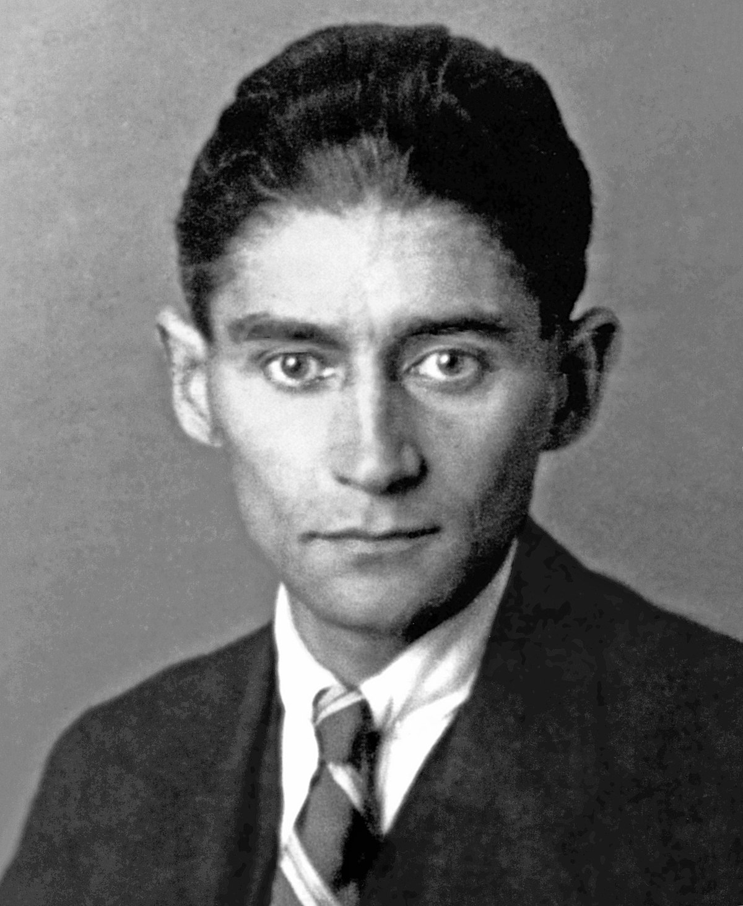

Slavná osobnost: Franz Kafka
| Portrét | Základní údaje | Významné činy | |
|---|---|---|---|
|  | Franz Kafka | Proces Proměna Zámek Amerika | |
| Narození: 1883 | Úmrtí: 1924 | ||
| byl pražský německy píšící spisovatel.
Je považován za jednoho z literárně nejvlivnějších spisovatelů 20. století. Téměř celý jeho život byl spjat s Prahou. Byl nekuřák, abstinent a vegetarián. |
|||
| Spisovatel Franz Kafka | |||
| Odkaz na wikipedii | |||
Značky a atributy tabulky
- <table>
- Značka označující celou tabulku.
- <thead>
- Značka označující záhlaví tabulky.
- <tr>
- Značka označující řádek tabulky.
- <td>
- Značka označující data tabulky.
- <th>
- Značka označující záhlaví tabulky.
- <caption>
- Značka označující popisek tabulky.
- colspan
- Atribut zajišťující rozpětí přes několik sloupců.
- rowspan
- Atribut zajišťující rozpětí přes několik řádků.